Show other secondary papers
Acoustic Chirality
Authors: Alex J. Vernon, Konstantin Y. Bliokh
Type: theory · Category: other · PDF: https://arxiv.org/pdf/2605.13249v1
Analysis basis: full PDF text, analyzed in chunks
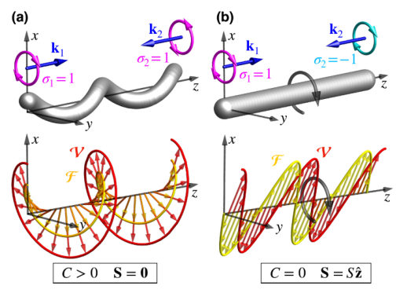
Summary. This paper identifies a new continuous symmetry and conservation law in the equations of linear isotropic elasticity. It provides a rigorous theoretical framework for defining acoustic chirality and helicity, distinguishing them from spin angular momentum. The work establishes that integral chirality is fundamentally linked to the population imbalance of right- and left-handed phonons.
Why it may be interesting. not directly relevant
Detailed structure
Main problem. The lack of a fundamental quantitative characterization of chirality and helicity in generic inhomogeneous acoustic wave fields, and the ambiguity in distinguishing between true chirality and spin angular momentum in chiral phonons.
Main result. The discovery of a previously unknown continuous dual symmetry and a corresponding conservation law in linear isotropic elasticity, which establishes acoustic chirality as a fundamental property of elastic waves.
Method. The authors use Helmholtz decomposition and Noether's theorem applied to the linear elasticity equations, recasting second-order wave equations into a first-order system of fields.
Model / system. The system consists of linear isotropic homogeneous elastic waves in solids, described by displacement, velocity, and an auxiliary vector field representing the curl of displacement.
Key observables. Acoustic chirality density, acoustic chirality flow density, acoustic helicity, spin angular momentum, and 'false chirality'.
Important parameters / regimes. Lamé coefficients, mass density, transverse and longitudinal wave velocities, and the population imbalance between right- and left-handed transverse phonons.
Assumptions / limitations. The analysis is primarily focused on the regime of linear isotropic elasticity.
Figures summary. Figure 1 illustrates two cases of standing transverse waves: one with same-helicity components producing non-zero chirality but zero spin, and another with opposite-helicity components producing non-zero spin but zero chirality.
Paper structure. The paper introduces the problem of acoustic chirality, establishes a mathematical framework using first-order equations, identifies a new continuous dual symmetry, derives the resulting conservation laws, introduces new concepts like acoustic helicity and false chirality, and validates the theory with interference field examples.
Abstract
We reveal a previously unknown continuous symmetry and conservation law in the equations of linear isotropic elasticity, which describe the chirality of elastic waves. We show that the integral chirality is determined by the population imbalance between right- and left-handed transverse phonons, whereas the local chirality density generally involves both transverse and longitudinal wave components. We also introduce the related concepts of acoustic helicity and ``false chirality''. The theory is illustrated with simple interference fields exhibiting distinct distributions of chirality, spin angular momentum, and false chirality. Our results establish chirality as a fundamental property of elastic waves and provide a general theoretical framework for chiral acoustic phenomena.
Anisotropic Dopant and Strain Architectures in WS$_2$ Nanocrystals Driven by Growth Kinetics
Authors: Frederico B. Sousa, Raphaela de Oliveira, Matheus J. S. Matos, Elizabeth Grace Houser, Igor Ferreira Curvelo, Zhuohang Yu, Mingzu Liu, Felipe Menescal, Gilmar Eugenio Marques, Leandro M. Malard, Mauricio Terrones, Bruno R. Carvalho, Helio Chacham, Marcio D. Teodoro
Type: both · Category: other · PDF: https://arxiv.org/pdf/2605.13577v1
Analysis basis: full PDF text, analyzed in chunks
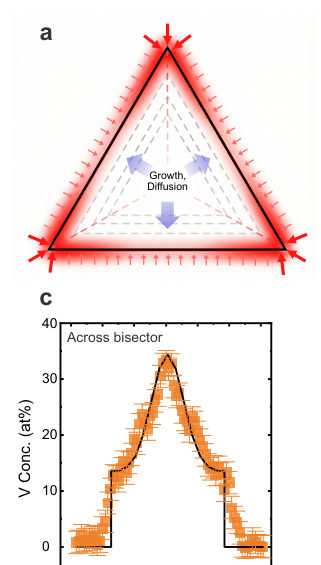
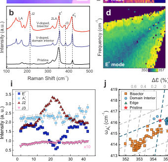
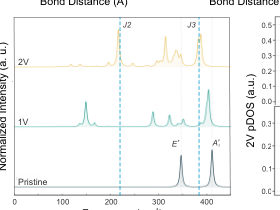
Summary. This paper shows that dopant distribution in WS2 can be controlled by tuning growth kinetics rather than relying on random processes. By harnessing non-equilibrium growth, the authors created predictable patterns of chemical and mechanical strain. This provides a new route for the deterministic engineering of 2D semiconductor architectures.
Why it may be interesting. not directly relevant
Detailed structure
Main problem. The spatial distribution of dopants in 2D semiconductors is typically stochastic, preventing deterministic defect engineering and leaving the origin of optical anomalies in WS2 domains unresolved.
Main result. The study demonstrates that non-equilibrium growth kinetics drive the anisotropic segregation of vanadium along crystallographic bisectors, creating predictable strain architectures and unique vibrational modes.
Method. The researchers combined synchrotron X-ray fluorescence (XRF) microscopy, hyperspectral Raman imaging, and AFM with an Adsorption-Growth-Diffusion (AGD) model and DFT calculations.
Model / system. The physical system consists of vanadium-doped WS2 monolayers grown via chemical vapor deposition (CVD), modeled using an AGD continuum framework that captures the competition between corner adsorption and thermal diffusion.
Key observables. Vanadium and tungsten concentrations, Raman modes (E', A'1, J2, J3), local tensile strain (epsilon), and topographic uplift/wrinkling.
Important parameters / regimes. Dimensionless kinetic parameter beta (approx. 10-100), vanadium concentration (up to 33%), and tensile strain (approx. 0.70%).
Assumptions / limitations. Vanadium substitutes tungsten at lattice sites; growth occurs at a constant velocity; the 2H phase remains the thermodynamic ground state; and the growth process is terminated by rapid quenching.
Figures summary. Fig 1 shows XRF intensity maps and concentration profiles of W, S, and V; Fig 2 presents the AGD model schematic and experimental fits; Fig 3 displays Raman spectra and spatial maps of vibrational modes and strain.
Paper structure. The paper introduces the problem of stochastic doping, presents XRF evidence of anisotropic V-segregation, applies the AGD model to explain the kinetic origin of this segregation, uses Raman and AFM to link dopant channels to mechanical strain, and concludes with the potential for programmable defect landscapes.
Abstract
Dopant distribution in two-dimensional semiconductors is typically assumed to be stochastic, limiting deterministic defect engineering. Here, we show that non-equilibrium growth kinetics can be harnessed to define dopant-driven strain architectures in vanadium-doped WS$_2$ monolayers. Using synchrotron X-ray fluorescence, we identify preferential vanadium incorporation, anti-correlated with tungsten content, along crystallographic bisectors. An adsorption-growth-diffusion model with a single kinetic parameter quantitatively captures the dopant segregation arising from preferential corner adsorption and limited diffusion during chemical vapor deposition growth. Hyperspectral Raman imaging demonstrates mechanically induced vibrational responses, revealing localized tensile strain ($\varepsilon \approx0.70\%$) channels associated with the anisotropic dopant distribution. This regime is marked by the depletion of W-site-sensitive in-plane modes and the emergence of a localized $J2$ mode (210~cm$^{-1}$), which our ab-initio calculations attribute to antiphase V$-$V oscillations. These findings establish kinetic segregation as a route to deterministic chemical and strain architectures in 2D semiconductors, enabling programmable defect landscapes and strain engineering during synthesis.
Apparent Ferroelectric Polarization Hysteresis and a Simple Method to Observe Piezoelectric Strain Loops with a Microphone
Authors: Mamoru Fukunaga
Type: experiment · Category: other · PDF: https://arxiv.org/pdf/2605.13089v1
Analysis basis: full PDF text, analyzed in chunks
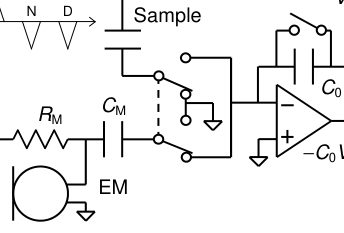
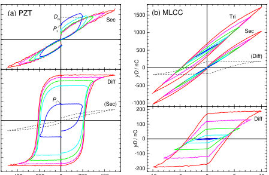
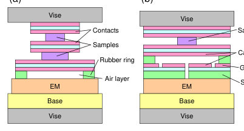

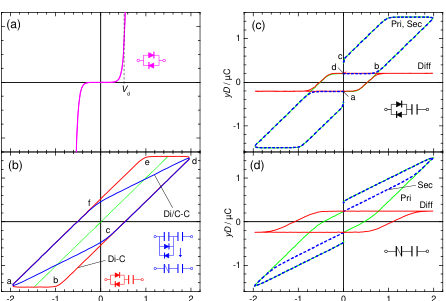
Summary. This paper identifies how measurement artifacts in electrical circuits can create deceptive ferroelectric signatures in non-ferroelectric materials. It introduces a highly cost-effective method using a simple microphone to observe piezoelectric strain, providing a more reliable way to confirm true ferroelectricity.
Why it may be interesting. not directly relevant
Detailed structure
Main problem. Distinguishing true ferroelectric polarization hysteresis (D-E loops) from 'fake' loops caused by circuit artifacts like series resistance or leakage, and developing a low-cost way to verify ferroelectricity via strain (S-E) loops.
Main result. The study demonstrates that certain D-E loops in MLCCs are artifacts of the measurement circuit and proves that S-E loops (showing butterfly patterns) are a more reliable indicator of ferroelectricity than D-E loops.
Method. The author uses a modified Sawyer-Tower circuit with a Double-Wave Method (DWM) and develops a new electromechanical sensing method using an inexpensive electret microphone to detect piezoelectric strain.
Model / system. The experimental platform involves PZT (lead zirconate titanate) as a ferroelectric standard and commercial MLCCs as subjects of investigation, using circuit models with resistors and diodes to simulate measurement artifacts.
Key observables. Electric flux density (D), electric field (E), piezoelectric strain (S), and displacement (zS).
Important parameters / regimes. Remanent polarization (Pr), electric field amplitude (V0), and air-layer capacitor thickness for calibration.
Assumptions / limitations. The calibration of the microphone-based sensor assumes a predictable rubber elasticity model for the air-layer capacitor setup.
Figures summary. Circuit diagrams for measurement, cross-sections of the microphone setup, D-E loops for PZT and MLCC, circuit models simulating fake loops, and calibration curves relating air layer thickness to weight.
Paper structure. The paper introduces the problem of fake ferroelectricity, presents circuit models for artifacts, describes the new microphone-based S-E measurement method, validates it with PZT, and applies it to debunk the ferroelectricity of certain MLCCs.
Abstract
Extra components in series to non-ferroelectric capacitance can cause apparent ferroelectric D-E hysteresis loops even with the double-wave method (DWM). Characteristics of fake loops are studied withsimple circuit models, and suspicious loops of actual materials are found in some papers using the DWM. Inverse piezoelectric strain also reverses along with the polarization by the electric field, and S-E loops are considered more reliable to prove ferroelectricity than the D-E loops. But measurement of S-E loops usually requires expensive instruments in contrast to D-E loops with a simple circuit. A very simple method is developed to observe S-E loops of bulk samples with an inexpensive small electret microphone and a little expansion to the circuit for D-E loops. S-E loops of a commercial ceramic capacitor by this method reveal that its D-E loops apparent.
Assessing foundational atomistic models for iron alloys under Earth's core conditions
Authors: Tianqi Wan, Liangrui Wei, Zepeng Wu, Renata M. Wentzcovitch, Yang Sun
Type: theory · Category: disordered systems and neural networks · PDF: https://arxiv.org/pdf/2605.13594v1
Analysis basis: full PDF text, analyzed in chunks
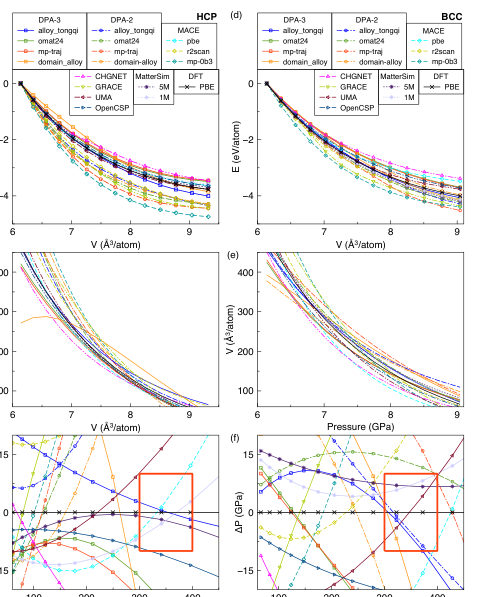
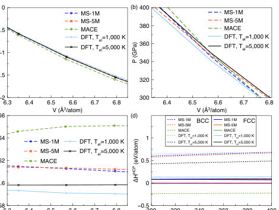
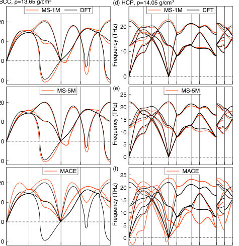
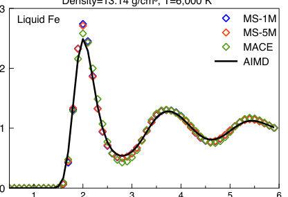
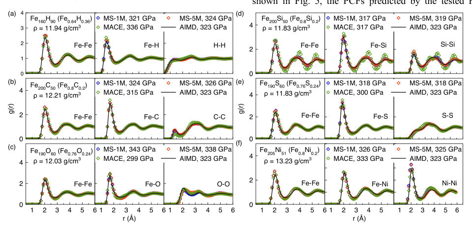
Summary. This paper evaluates whether modern machine-learning-based atomistic models can accurately simulate iron alloys under the extreme pressures and temperatures of Earth's core. It finds that while these models are computationally efficient and capture some structural features, they currently fail to consistently predict phase stability and thermodynamic properties due to the lack of explicit thermal electronic excitation treatment.
Why it may be interesting. not directly relevant
Detailed structure
Main problem. Assessing the reliability and transferability of Foundational Atomistic Models (FAMs) for simulating the structural, dynamical, and thermodynamic properties of iron alloys under the extreme pressure and temperature conditions of Earth's core.
Main result. While FAMs like MatterSim and MACE can capture liquid structures and some properties of complex melts, they struggle with phase stability (e.g., MACE overestimates bcc stability) and lack explicit treatment of thermal electronic excitations, which is critical for core conditions.
Method. Benchmarking 17 different FAMs against ab initio molecular dynamics (AIMD) and Density Functional Theory (DFT) using static equations of state, phonon dispersion, and thermodynamic integration for melting temperatures.
Model / system. The physical system consists of iron alloys (including Fe-Ni, Fe-Si, Fe-S, Fe-O, Fe-C, and Fe-H) under Earth's core conditions (pressures up to 365 GPa and temperatures exceeding 5000 K). The models evaluated are Foundational Atomistic Models (FAMs) such as MACE and MatterSim.
Key observables. Static equations of state (E-V, P-V curves), phonon spectra, liquid structure (Pair Correlation Functions), melting temperatures, phase stability (hcp vs. bcc), and diffusion coefficients (MSD).
Important parameters / regimes. Pressures up to 365 GPa, temperatures up to 6000 K, and a seven-component Fe-Ni-Si-S-O-H-C liquid system.
Assumptions / limitations. The models were not explicitly trained on data from Earth's core conditions; the study assumes DFT/AIMD results serve as the ground truth benchmark.
Figures summary. Figure 1a shows E-V curves for hcp iron; Figure 4 shows PCFs for pure liquid iron; Figure 5 shows PCFs for various binary iron alloy melts; Figure 6 illustrates the liquid structure of Fe-O melt; Figure 8 compares RDF and MSD for a seven-element melt; Figure 9 compares computational wall time scaling for different models.
Paper structure. The paper begins by introducing the problem of simulating core conditions, followed by a benchmarking of 17 FAMs against DFT for static properties, an evaluation of dynamic/thermal properties (phonons, melting), an analysis of complex multicomponent melts, a discussion on computational efficiency, and finally an identification of model limitations and future directions.
Abstract
We assess the capability of recently developed foundational atomistic models (FAMs) to simulate iron alloys under the extreme pressures and temperatures of Earth's core. Static equations of state of hexagonal close-packed (hcp) and body-centered cubic (bcc) iron computed by 17 FAMs are benchmarked against ab initio calculations. Two representative models, MatterSim and MACE, are further evaluated for their ability to reproduce phonon spectra, liquid structure, and melting relations of iron at core conditions. While both models capture several key properties, MACE substantially overestimates the stability of bcc iron and fails to correctly describe the stability of hcp iron. Their performance is also examined for binary liquids, superionic phases, and a seven-component Fe-Ni-Si-S-O-H-C liquid. Although these FAMs were not explicitly trained on data from core conditions, they can reproduce several structural and dynamical properties across a wide range of compositions. However, none of the tested models consistently reproduces all first-principles benchmarks. By analyzing the origins of these discrepancies, we identify several limitations of current FAMs, particularly the lack of an explicit treatment of thermal electronic excitations, which significantly affect phase stability and thermodynamic properties under core conditions. We further discuss directions for improving FAMs to enable predictive simulations of core-forming materials under extreme conditions.
Chiral molecule-induced contributions to ferromagnetic resonance
Authors: Jurgen Lindner, Pedro Contreras-Gallardo, Abhishek Singh, Ruslan Salikhov, Anna Semisalova, Olav Hellwig, Rodolfo Gallardo, Anna Lewandowska-Andralojc, Kilian Lenz, Aleksandra Lindner
Type: both · Category: other · PDF: https://arxiv.org/pdf/2605.13805v1
Analysis basis: full PDF text, analyzed in chunks
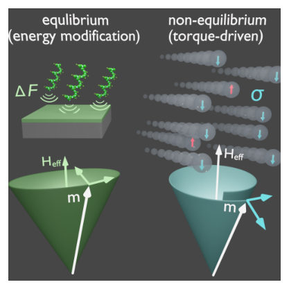
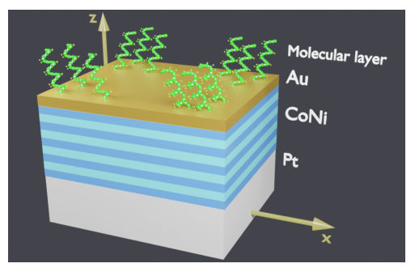
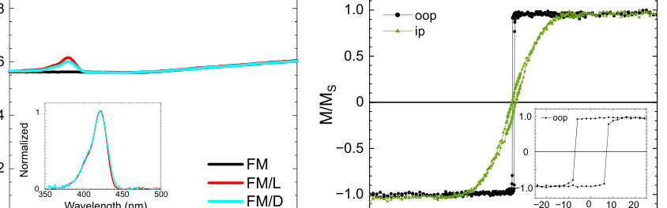
Summary. This paper investigates whether chiral molecules can modify the magnetization dynamics of ferromagnetic thin films. While experimental results found no measurable impact on resonance or damping in the studied system, the authors provide a new theoretical framework to distinguish between equilibrium energy landscape changes and non-equilibrium spin torques.
Why it may be interesting. not directly relevant
Detailed structure
Main problem. The study aims to determine if chiral molecules induce measurable changes in the dynamic magnetic response of ferromagnets via equilibrium (MIPAC) or non-equilibrium (CISS) mechanisms.
Main result. Experimental FMR measurements showed no measurable changes in resonance field or linewidth between bare and chiral-functionalized Co/Ni films, leading the authors to develop a theoretical framework to distinguish between energy landscape modifications and spin torques.
Method. The authors used broadband ferromagnetic resonance (FMR) spectroscopy on Co/Ni multilayers functionalized with chiral peptides and developed a macrospin model based on the Landau-Lifshitz equation to differentiate between MIPAC and CISS effects.
Model / system. The physical system consists of Co/Ni multilayer thin films with perpendicular magnetic anisotropy (PMA) functionalized with L- and D-enantiomer oligopeptides. The theoretical model uses a macrospin approximation where magnetization dynamics are governed by a modified Landau-Lifshitz equation including spin-torque terms.
Key observables. Resonance field, FMR linewidth (damping), resonance frequency, and magnetic anisotropy parameters.
Important parameters / regimes. Gilbert damping constant (alpha), effective magnetization (Meff), spin polarization (sigma), and the distinction between field-like and damping-like torques.
Assumptions / limitations. The analysis assumes a macrospin approximation (uniform magnetization), small-amplitude magnetization deviations (linearization), and that the molecules are adsorbed at an angle that averages to a net component along the film normal.
Figures summary. Figure 1 provides a schematic of chiral-interface effects on energy landscapes and torques; Figure 4 shows frequency-field dependence for in-plane and out-of-plane orientations; Figure 5 shows frequency dependence of linewidths; Figure 9 shows calculated asymmetric FMR linewidth shifts for CISS-induced torques.
Paper structure. The paper begins by defining the scientific problem of chiral-induced dynamics, describes the experimental setup and sample preparation, presents FMR results showing no detectable chiral influence, and then transitions into a theoretical derivation to establish criteria for distinguishing MIPAC from CISS effects.
Abstract
Despite extensive research on chirality-driven spin selectivity, most studies have focused on static magnetic properties, while the influence of chirality on the dynamic magnetic response remains largely unexplored. Here, we investigate how chiral molecular interfaces affect magnetization dynamics in thin Co/Ni multilayers with perpendicular magnetic anisotropy using broadband ferromagnetic resonance spectroscopy. A comparison between bare (reference) films and molecule-functionalized (hybrid) samples reveals no measurable changes in either the resonance field or the linewidth that could be attributed to the presence of the chiral environment. Motivated by our findings we develop a macrospin description that distinguishes equilibrium modifications of the magnetic free-energy landscape (MIPAC-type effects) from non-equilibrium, CISS-induced spin torques. Our analysis shows that equilibrium modifications primarily shift the resonance condition via changes to the free energy landscape and thereby the effective field, whereas damping-like non-equilibrium torques provide a distinct channel for varying the effective damping rate. This approach establishes clear criteria for disentangling chiral-interface-induced energy modifications from torque-driven dynamical effects in ferromagnetic resonance experiments.
Coupled Topological Interface States and Phonon Molecules in GaAs/AlAs Superlattices
Authors: S. Sandeep, O. Colmegna, C. Xiang, E. R. Cardozo de Oliveira, K. Papatryfonos, M. Morassi, A. Lemaitre, N. D. Lanzillotti-Kimura
Type: both · Category: other · PDF: https://arxiv.org/pdf/2605.12635v1
Analysis basis: full PDF text, analyzed in chunks
Summary. This paper demonstrates the engineering of 'phonon molecules' and chains by coupling topological interface states in GaAs/AlAs superlattices. It shows that these states can form tunable, narrow minibands and are more robust to structural disorder than traditional acoustic cavities. This work establishes a platform for designing complex, controllable nanophononic architectures in the GHz regime.
Why it may be interesting. not directly relevant
Detailed structure
Main problem. The study aims to explore the coupling of topological nanophononic interface states to engineer complex architectures, such as phonon molecules and extended chains of coupled states.
Main result. The researchers successfully demonstrated the formation of phonon molecules and chains of up to N=6 coupled interface states, showing that mode splitting is tunable and that these topological states are more robust to thickness-ratio fluctuations than conventional Fabry-Perot systems.
Method. Experimental detection was performed using time-domain pump-probe transient reflectivity measurements, while theoretical analysis utilized transfer-matrix calculations, a photoelastic model, and Bloch boundary conditions.
Model / system. The system consists of GaAs/AlAs superlattices (distributed Bragg reflectors) engineered via band inversion within a 1D Su-Schrieffer-Heeger (SSH) framework to create topological interface states.
Key observables. Acoustic reflectivity, mode splitting (frequency separation), transient reflectivity signal, Brillouin oscillations, and spatial displacement/strain profiles.
Important parameters / regimes. GHz frequency regime (specifically ~300 GHz), number of interfaces (N), reflectivity of the central DBR, and thickness-ratio perturbations.
Assumptions / limitations. The photoelastic model simplifies the detection and generation efficiency by neglecting detailed material-specific coefficients, and the system is treated as a 1D periodic lattice.
Figures summary. Fig 1: Principle of interface state formation via band inversion; Fig 2: Phonon molecule concept and mode splitting dependence on DBR periods; Fig 3: Experimental pump-probe setup, Fourier spectra, and strain profiles; Fig 4: Comparison of frequency stability and Q-factor degradation; Fig 5: Evolution of reflectivity and dispersion from molecules to chains; Fig 6: Measured signal and simulated features for N=6 chains.
Paper structure. The paper introduces the concept of topological interface states, demonstrates the creation of phonon molecules through coupled interfaces, extends the concept to multi-interface chains, provides a robustness analysis against disorder, and concludes with the implications for tunable nanophononic architectures.
Abstract
Topological interface states in one-dimensional superlattices provide spatially localized phonon modes protected by the topology of the underlying band structure. In GaAs/AlAs distributed Bragg reflectors (DBRs), such states can be engineered through band inversion between superlattices with opposite Zak phases within the Su-Schrieffer-Heeger (SSH) framework. Here, we demonstrate topological phonon molecules and extended chains formed by coupled nanophononic interface states. By concatenating three superlattices with alternating topology, we realize two coupled interface states that hybridize into symmetric and antisymmetric modes, whose splitting can be tuned over tens of gigahertz by varying the reflectivity of the central DBR. Extending this concept, we engineer chains of up to N=6 coupled interface states that form narrow topological minibands while remaining strongly localized at the interfaces. We experimentally observe these coupled states in molecular-beam-epitaxy-grown GaAs/AlAs heterostructures using time-domain pump-probe transient reflectivity measurements, and reproduce their behavior using transfer-matrix calculations and a simple analytical model for the mode splitting. These results establish topological interface states as a robust platform for engineering coupled phononic systems and tunable nanophononic architectures in the GHz regime.
Direct-write electrochemical nanofabrication of ultrasmall graphene devices
Authors: Xiao Liu, Colm Durkan
Type: both · Category: other · PDF: https://arxiv.org/pdf/2605.12660v1
Analysis basis: full PDF text, analyzed in chunks
Summary. This paper presents a new method for using an AFM tip with an AC bias to etch graphene into extremely narrow nanoribbons. This technique allows for much higher resolution than standard lithography and successfully demonstrates the creation of transistors with a measurable bandgap.
Why it may be interesting. not directly relevant
Detailed structure
Main problem. The difficulty of reliably and cost-effectively fabricating sub-10 nm graphene nanoribbons (GNRs) for next-generation transistors due to the high cost and complexity of conventional electron-beam lithography.
Main result. Demonstration of a robust, low-cost AC-driven electrochemical AFM lithography method capable of creating GNRs with widths below 10 nm and observing a bandgap opening in the resulting devices.
Method. The researchers used electrochemical Atomic Force Microscopy (AFM) with an alternating current (AC) bias to perform local anodic oxidation (AC-LAO) on CVD graphene.
Model / system. The system consists of an AFM tip in contact with CVD graphene on a SiO2 substrate, where a water meniscus is formed via capillary condensation. The study employs an equivalent circuit model and a finite-difference electrostatic model to describe the electrochemical reaction and electric field distribution.
Key observables. Etched linewidth, topography, C-AFM current mapping, Charge Neutrality Point (CNP) shift, and bandgap opening.
Important parameters / regimes. AC voltage amplitude (5.5V to 10V), frequency (up to 600 kHz), relative humidity (40% to 80%), tip speed, and contact force.
Assumptions / limitations. The BET model is used to relate adsorbed water volume to relative humidity; the etching process is driven by Faradic current within the meniscus.
Figures summary. Figure 1 shows the AC-LAO schematic and etched line arrays; Figure 2 shows the effect of contact force on topography; Figure 3 relates voltage amplitude to linewidth; Figure 13 and 14 illustrate device fabrication, SEM imaging, and CNP measurements showing bandgap opening.
Paper structure. Introduction of the fabrication challenge, description of the AC-LAO experimental platform, presentation of the electrochemical and electrostatic models, experimental results on linewidth control and humidity dependence, and demonstration of sub-10 nm device characterization.
Abstract
Graphene nano-ribbons, GNRs, are promising channel materials for next-generation ultra-miniaturised devices due to their exceptional electrical and thermal properties which arise from their atomic thickness, as well as their ability to have a size-dependent band-gap [1-9]. However, despite extensive efforts to reliably fabricate narrow GNR-based field-effect transistors [10-12], their integration into conventional transistor technologies remains hindered by challenges such as high fabrication costs and complex processing requirements [13, 14]. In this study, we present a direct-write, relatively low-cost and robust approach for fabricating sub-10 nm GNR-based FETs using electrochemical atomic force microscopy lithography with an alternating current (AC) bias, obviating the need for electrodes. We also explain the underlying electrochemical process and provide a model which can be used to describe it. Leveraging the high-precision positioning capability of AFM, this method enables precise nanoscale graphene patterning with feature sizes below 10nm. Compared with conventional lithographic techniques, photo- and electron-beam lithography i.e., PL & EBL, respectively [2, 15-20], it offers higher resolution, lower defect density, contamination-free processing, and the capability for in situ nanoscale device modification and characterisation. This work provides an efficient strategy for advancing GNR-based nanoelectronics.
Electron - acoustic phonons scattering in quantum wells in a tilted quantizing magnetic field
Authors: M. P. Telenkov, Yu. A. Mityagin
Type: theory · Category: other · PDF: https://arxiv.org/pdf/2605.13274v1
Analysis basis: full PDF text, analyzed in chunks
Summary. This paper provides a theoretical derivation of electron-acoustic phonon scattering rates in quantum wells under tilted magnetic fields. It demonstrates how the parallel component of the field shifts resonance peaks and how the symmetry of the quantum well potential determines the impact on scattering amplitudes.
Why it may be interesting. not directly relevant
Detailed structure
Main problem. The paper investigates how the components of a tilted quantizing magnetic field (perpendicular and parallel) influence the electron-acoustic phonon scattering rate in semiconductor quantum wells.
Main result. The parallel magnetic field component causes resonance shifts in the scattering rate proportional to B_parallel^2 and the square of the well width, and it can affect transition amplitudes in asymmetric potential profiles.
Method. The authors use Fermi's Golden Rule and an envelope-function Hamiltonian in the Landau gauge to derive analytical expressions for the scattering rate via the deformation potential approximation.
Model / system. The system consists of electrons in a semiconductor quantum well (e.g., GaAs/AlGaAs) subjected to a magnetic field tilted at an angle to the growth axis.
Key observables. Electron scattering rate (transition rate), spectral amplitude A(x), and resonance shifts in the energy spectrum.
Important parameters / regimes. Magnetic field components (B_perp, B_parallel), tilt angle, quantum well width (a), potential profile symmetry, and temperature.
Assumptions / limitations. Neglect of spin splitting, neglect of intersubband coupling when Landau energy is much smaller than intersubband distance, and use of the parabolic approximation for the energy spectrum.
Figures summary. Figures show the spectral amplitude A(x) for different field strengths, the dependence of the scattering rate on B_perp and B_parallel, and the effect of electric fields on transition amplitudes in asymmetric wells.
Paper structure. The paper begins with the derivation of the Hamiltonian and scattering rate in a tilted field, followed by an analysis of the effects of B_parallel on intra- and intersubband transitions, and concludes with discussions on symmetry effects and numerical examples.
Abstract
Electron scattering by longitudinal acoustic phonons in a quantizing magnetic field is considered. Expressions for the scattering rate in a magnetic field tilted to the quantum well layers are derived. By analyzing these expressions, trends in the behavior of the scattering rate are established with changes in the magnetic field strength and orientation, as well as the potential profile of the quantum well.
Enhanced Near-Field Thermal Radiation Driven by Multiple Corner and Edge Modes in Subwavelength Square Nanowires
Authors: Jose Ordonez-Miranda, Minggang Luo, Michele Diego, Roman Anufriev, Victor Guillemot, Masahiro Nomura, Sebastian Volz
Type: theory · Category: other · PDF: https://arxiv.org/pdf/2605.13712v1
Analysis basis: full PDF text, analyzed in chunks

Summary. This paper demonstrates that square SiC nanowires significantly enhance near-field thermal radiation compared to planar surfaces due to the presence of multiple corner and edge modes. The enhancement is most effective when the nanowire thickness matches the separation gap, offering a way to control heat transfer via geometry.
Why it may be interesting. not directly relevant
Detailed structure
Main problem. Investigating whether the reduction of planar surfaces into subwavelength square nanowires enhances near-field thermal radiation through localized corner and edge electromagnetic modes.
Main result. Square nanowires exhibit a four-fold enhancement of thermal conductance compared to planar surfaces, driven by multiple corner and edge resonances that decay more slowly across the gap than standard surface-phonon-polaritons.
Method. Numerical simulations using the Scuff-EM boundary-element method within the framework of fluctuational electrodynamics.
Model / system. Two parallel, subwavelength Silicon Carbide (SiC) nanowires with square cross-sections, characterized by thickness (t) and separation gap (d).
Key observables. Thermal conductance (G), spectral thermal conductance (G_omega), and the enhancement ratio relative to infinite planar surfaces (G/G_infinity).
Important parameters / regimes. Nanowire thickness (t), separation distance (d), and the SiC Reststrahlen band frequency range.
Assumptions / limitations. The system is analyzed in the triple nanoscale regime where thickness, width, and gap are all subwavelength; room temperature (300 K) is assumed.
Figures summary. Figure 1 shows a schematic of heat transfer modes (propagating, evanescent, corner/edge); Figure 2 displays spectral and integrated thermal conductance vs. separation distance; Figure 3 shows frequency spectra and conductance vs. thickness; Figure 4 contains density maps.
Paper structure. The paper introduces the problem of near-field heat transfer in nanowires, describes the physical system and numerical method, presents results regarding multi-mode resonance and frequency redshift, discusses the optimization of conductance via geometry, and concludes with implications for nanoscale heat management.
Abstract
We demonstrate that the near-field thermal radiation between subwavelength SiC nanowires with square cross sections is dominated by multiple corner and edge resonances rather than the single surface-phonon-polariton channel of planar surfaces. Fluctuational electrodynamics simulations reveal that these resonances lie within the SiC Reststrahlen band, redshift for thinner nanowires, and yield a four-fold enhancement of thermal conductance. This maximum enhancement occurs when the separation gap nearly matches the nanowire thickness, balancing dimensional confinement and interwire coupling. These findings establish square nanowires as a versatile platform for geometrycontrolled near-field heat transfer in nanoscale heat management and energy conversion.
Helium Bubbles in Liquid Lead Lithium Solutions: Pressure Inhomogeneities at Interfaces and Non Ideal Mixture Effects
Authors: Edgar Alvarez-Galera, Jordi Marti, Lluis Batet
Type: theory · Category: statistical mechanics · PDF: https://arxiv.org/pdf/2605.13164v1
Analysis basis: full PDF text, analyzed in chunks
Summary. This paper uses molecular dynamics to investigate how the chemical composition of liquid lead-lithium alloys influences the formation and stability of helium bubbles. It provides a detailed mechanical analysis of pressure inhomogeneities and interfacial tension at the bubble surface, which is critical for designing fusion reactor breeding blankets.
Why it may be interesting. not directly relevant
Detailed structure
Main problem. Understanding the formation, stability, and interfacial properties of helium bubbles in liquid lead-lithium (Pb-Li) alloys, specifically focusing on how alloy composition and curvature affect interfacial tension and pressure inhomogeneities.
Main result. The study establishes that helium bubble formation is a cavitation process driven by supersaturation and finds that interfacial tension is non-monotonic with alloy composition, peaking at intermediate concentrations. It also demonstrates that local pressure anisotropies at the interface are driven by the competition between kinetic and virial pressure components.
Method. Classical molecular dynamics simulations using the velocity-Verlet algorithm and the Irving-Kirkwood contour method to calculate local pressure tensor components and interfacial tension.
Model / system. Helium clusters (nanobubbles) embedded in liquid lead-lithium (Pb-Li) eutectic solutions, modeled using Embedded Atom Method (EAM) potentials (AEAM-2023 and BEAM-2019) for the metal phase and pairwise potentials for helium.
Key observables. Interfacial tension (gamma), pressure anisotropy (difference between normal and tangential pressure), bubble radius, density profiles, and interfacial free energy.
Important parameters / regimes. Temperature (up to 1021 K), atomic composition (Pb:Li ratios), and interface geometry (planar vs. spherical/curved).
Assumptions / limitations. Helium is considered infinitely diluted; helium densities within the bubble and bulk are assumed uniform; helium-helium interactions are treated as purely pair-decomposable.
Figures summary. Snapshots of helium bubbles and bilayers; comparison of ideal vs. non-ideal pressure profiles; plots of interfacial tension and bubble radii as functions of lead fraction; convergence plots of tension with cluster size; and radial pressure tensor profiles for various alloys.
Paper structure. The paper introduces the problem of helium solubility in liquid metals, describes the MD simulation setup and EAM potentials, details the mathematical framework for pressure tensor and tension calculations, presents results on interfacial structure and tension across different compositions, and discusses curvature and energetic implications.
Abstract
The extremely low solubility of helium in liquid metals may lead to rapid supersaturation, promoting spontaneous formation of helium bubbles by nucleation. Once nucleated, the stability of these bubbles is governed by the properties of the helium liquid metal interface. In particular, interfacial tension between the immiscible phases controls bubble interactions and induces local pressure inhomogeneities. This work is motivated by the need of a better understanding of helium bubble formation in liquid Pb Li alloys, which are of particular relevance for the design of breeding blankets in the future nuclear fusion reactors. We employ classical molecular dynamics simulations to investigate helium segregation in a range of lead lithium systems, including the limiting cases of pure lead and pure lithium. Changes in local pressure are evaluated from direct mechanical calculations, enabling the characterization of interfacial properties. Interfacial tension and radius of the bubble are subsequently determined across multiple thermodynamic conditions, spanning temperatures starting near the melting points of the constituent metals up to 1021 K. The impact of curvature and composition of the alloy on the interfacial behaviour are also investigated.
High-Pressure XRD Study of Ti-3Al-2.5V Titanium Alloy: Intermediate Transition Pressure and Composition Trends in Ti-Al-V Alloys
Authors: D. Errandonea, R. Turnbull, P. Botella, R. Oliva, C. Popescu, S. MacLeod
Type: experiment · Category: other · PDF: https://arxiv.org/pdf/2605.13658v1
Analysis basis: full PDF text, analyzed in chunks
Summary. This study demonstrates that increasing the aluminum and vanadium content in titanium alloys raises the pressure required for the alpha-to-omega phase transition without significantly altering the material's bulk modulus. This finding provides a way to tune the structural stability of titanium alloys under extreme pressure without changing their mechanical stiffness.
Why it may be interesting. not directly relevant
Detailed structure
Main problem. Investigating how the addition of Al and V affects the structural stability and the pressure-induced alpha-to-omega phase transition in Ti-Al-V alloys.
Main result. The transition pressure increases systematically with higher Al and V content, while the bulk modulus remains nearly unchanged, suggesting a decoupling of phase stability and elastic properties.
Method. High-pressure X-ray diffraction (XRD) using a diamond-anvil cell at the ALBA synchrotron, with data analyzed via the Le Bail method and Birch-Murnaghan equation of state.
Model / system. Polycrystalline Ti-3Al-2.5V alloy, compared against pure Ti and Ti-6Al-4V, subjected to high pressures using various pressure-transient media (methanol-ethanol, silicone oil, and MgO).
Key observables. Transition pressure (P_onset), lattice parameters (a, c, c/a ratio), bulk modulus (K0), and volume collapse.
Important parameters / regimes. Pressure range (up to ~30 GPa), Al and V concentration levels, and the degree of hydrostaticity of the pressure medium.
Assumptions / limitations. The transition mechanism is assumed to be fundamentally similar across the Ti-Al-V series; experimental scatter in omega-phase volume data required combined datasets for EOS fitting.
Figures summary. XRD patterns showing the emergence of the omega-phase (Fig 3-5), a plot of transition pressure vs. alloy composition (Fig 6), and the pressure dependence of lattice parameters and c/a ratios (Fig 7).
Paper structure. Introduction to Ti-Al-V importance, experimental setup (DAC and synchrotron), results of phase transition pressures across different compositions, analysis of elastic properties (EOS), and discussion of the decoupling of stability and elasticity.
Abstract
High-pressure X-ray diffraction experiments were performed on Ti-Al-V alloys to investigate the effect of composition on structural stability, focusing on Ti-3Al-2.5V and comparing with pure Titanium and Ti-6Al-4V. Measurements using different pressure-transmitting media show a phase transition in Ti-3Al-2.5V at 17-19 GPa, intermediate between pure Ti (5-10 GPa) and Ti-6Al-4V (~30 GPa). Despite variations arising from the choice of pressure medium, the transition pressure shows a clear and systematic increase with higher Al and V content. Equation-of-state analysis indicates that the bulk modulus remains nearly unchanged across compositions. This suggests a decoupling between elastic properties and phase stability, with alloying primarily affecting the transition pressure rather than compressibility. These results highlight the role of composition in tuning high-pressure phase transformations in Ti-Al-V based alloys.
High-temperature behavior of amorphous alumina coatings: Insights from in-situ nanoindentation and X-ray diffraction studies
Authors: A. Zaborowska, L. Kurpaska, M. Zielinski, Q. Xu, E. Wyszkowska, J. OConnell, J. H. Neethling, F. Di Fonzo, M. Frelek-Kozak, S. Papanikolaou, R. Diduszko, J. Jagielski
Type: both · Category: disordered systems and neural networks · PDF: https://arxiv.org/pdf/2605.13528v1
Analysis basis: full PDF text, analyzed in chunks
Summary. This paper investigates how high temperatures affect the mechanical and structural properties of amorphous alumina coatings used in nuclear reactors. It identifies a bond-switching mechanism that causes softening without changing the elastic modulus and tracks the transition from amorphous to crystalline phases up to 1050 C.
Why it may be interesting. not directly relevant
Detailed structure
Main problem. Understanding the high-temperature mechanical behavior and structural stability of amorphous alumina (Al2O3) coatings, specifically regarding hardness reduction and phase transitions.
Main result. Hardness decreases significantly with temperature due to an accelerating bond-switching mechanism, while Young's modulus remains constant; crystallization occurs between 650-700 C.
Method. In-situ high-temperature nanoindentation and X-ray diffraction (XRD) combined with Molecular Dynamics (MD) simulations using the Vashishta potential.
Model / system. Amorphous alumina (Al2O3) thin films deposited via pulsed laser deposition (PLD) onto 316L stainless steel substrates.
Key observables. Hardness (H), Young's modulus (E), Microhardness Dissipation Parameter (MDP), and phase composition (alpha, theta, etc.).
Important parameters / regimes. Temperature range from 25 C to 1050 C; coating thickness of approximately 5 micrometers.
Assumptions / limitations. MD simulations use a high loading rate compared to experiments; thermal gradients exist due to bottom-up heating during indentation.
Figures summary. Schematics of experimental and MD setups; load-displacement curves; temperature dependence of plasticity (MDP); and TEM images of the coating cross-section.
Paper structure. Introduction to nuclear application needs, followed by experimental setup for nanoindentation and XRD, MD simulation methodology, results regarding mechanical properties and phase evolution, and discussion of the bond-switching mechanism.
Abstract
Further development of nuclear power plant technology relies heavily on materials durability under operating conditions. Estimating the materials performance in the operando tests is crucial. In this paper, the mechanical behavior of thin amorphous nuclear-dedicated Al2O3 coatings deposited by pulsed laser deposition was investigated by nanoindentation over the temperature range of 25-650C. Experimental nanomechanical analysis was supported by MD simulations. The results indicate that the hardness of the amorphous coating experiences a gradual, constant decrease with temperature, while the Young modulus value remains constant in the whole temperature range. Observed phenomena confirm the increasing plasticity of the material and it is postulated to be related to the bond-switching mechanism that accelerates at high temperatures. The post-mortem transmission electron microscopy characterization confirmed that the loaded material was non-crystalline over the entire range of the indentation temperatures. The thermal stability of the structure was further studied in-situ up to 1050C by X-ray diffraction. The implemented methodology allowed us to follow the dynamic process of phase transitions occurring in the material above 650C. First, thermally activated crystallization was observed at 700C. Intermediate alumina phases were present up to 950C, while above this temperature, exclusively the thermodynamically stable alpha-Al2O3 was observed. The in-situ high-temperature characterization of the evolution of thin films boosts the understanding of the application limits of the coating systems at elevated temperatures. The added value is that the paper demonstrates the potential usefulness of combining high-temperature techniques to characterize the complete behavior of thin films at elevated temperatures.
← Index · ← Previous · Next →